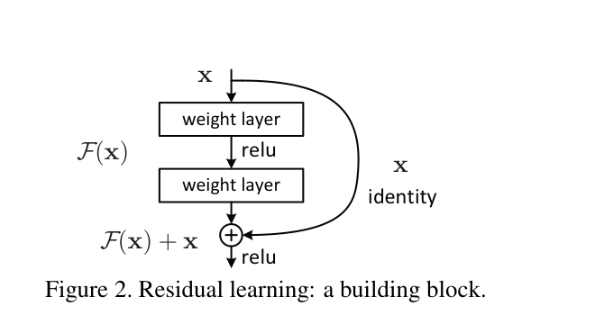

摘要给了三个关键数字：152 层（比 VGG 深 8 倍但复杂度更低）、3.57% 错误率（ILSVRC 2015 冠军）、COCO 检测相对提升 28%。但真正重要的是那句"explicitly reformulate the layers as learning residual functions"——这是全文的核心。
EN
Deeper neural networks are more difficult to train. We present a residual learning framework to ease the training of networks that are substantially deeper than those used previously.
译文
更深的神经网络更难训练。我们提出一种残差学习框架，使比此前所用网络深得多的网络更容易训练。
EN
We explicitly reformulate the layers as learning residual functions with reference to the layer inputs, instead of learning unreferenced functions. We provide comprehensive empirical evidence showing that these residual networks are easier to optimize, and can gain accuracy from considerably increased depth.
On the ImageNet dataset we evaluate residual nets with a depth of up to 152 layers — 8× deeper than VGG nets but still having lower complexity. An ensemble of these residual nets achieves 3.57% error on the ImageNet test set. This result won the 1st place on the ILSVRC 2015 classification task. We also present analysis on CIFAR-10 with 100 and 1000 layers.
The depth of representations is of central importance for many visual recognition tasks. Solely due to our extremely deep representations, we obtain a 28% relative improvement on the COCO object detection dataset.
Deep convolutional neural networks have led to a series of breakthroughs for image classification. Deep networks naturally integrate low/mid/high-level features and classifiers in an end-to-end multi-layer fashion, and the "levels" of features can be enriched by the number of stacked layers (depth).
Recent evidence reveals that network depth is of crucial importance, and the leading results on the challenging ImageNet dataset all exploit "very deep" models, with a depth of sixteen to thirty. Many other non-trivial visual recognition tasks have also greatly benefited from very deep models.
Driven by the significance of depth, a question arises: Is learning better networks as easy as stacking more layers? An obstacle to answering this question was the notorious problem of vanishing/exploding gradients, which hamper convergence from the beginning. This problem, however, has been largely addressed by normalized initialization and intermediate normalization layers, which enable networks with tens of layers to start converging for SGD with backpropagation.
When deeper networks are able to start converging, a degradation problem has been exposed: with the network depth increasing, accuracy gets saturated (which might be unsurprising) and then degrades rapidly. Unexpectedly, such degradation is not caused by overfitting, and adding more layers to a suitably deep model leads to higher training error.
Figure 1. Training error (left) and test error (right) on CIFAR-10 with 20-layer and 56-layer plain networks. The deeper network has higher training error, and thus test error.图 1 · 20 层与 56 层「plain」网络在 CIFAR-10 上的训练误差（左）与测试误差（右）。更深的网络训练误差更高，测试误差也更高。
The degradation indicates that not all systems are similarly easy to optimize. Let us consider a shallower architecture and its deeper counterpart that adds more layers onto it. There exists a solution by construction to the deeper model: the added layers are identity mapping, and the other layers are copied from the learned shallower model. The existence of this constructed solution indicates that a deeper model should produce no higher training error than its shallower counterpart. But experiments show that our current solvers on hand are unable to find solutions that are comparably good or better than the constructed solution.
解读 · 全篇最重要的论证：这是一个"存在性 vs 可学习性"的矛盾——理论上更深的模型至少不比浅层差（把多出的层设为恒等映射即可），但优化器找不到这个解。所以问题不是模型容量，而是优化难度。ResNet 的核心就是把"学恒等映射"这个解变得容易到达。
EN
In this paper, we address the degradation problem by introducing a deep residual learning framework. Instead of hoping each few stacked layers directly fit a desired underlying mapping, we explicitly let these layers fit a residual mapping. Formally, denoting the desired underlying mapping as H(x), we let the stacked nonlinear layers fit another mapping of F(x) := H(x) − x. The original mapping is recast into F(x) + x. We hypothesize that it is easier to optimize the residual mapping than to optimize the original, unreferenced mapping. To the extreme, if an identity mapping were optimal, it would be easier to push the residual to zero than to fit an identity mapping by a stack of nonlinear layers.
The formulation of F(x) + x can be realized by feedforward neural networks with "shortcut connections". Shortcut connections are those skipping one or more layers. In our case, the shortcut connections simply perform identity mapping, and their outputs are added to the outputs of the stacked layers. Identity shortcut connections add neither extra parameter nor computational complexity. The entire network can still be trained end-to-end by SGD with backpropagation, and can be easily implemented using common libraries without modifying the solvers.
译文
F(x) + x 的形式可以通过带"短路连接"的前馈网络实现。短路连接是跳过一层或多层的连接。在我们的情形中，短路连接只做恒等映射，其输出与堆叠层的输出相加。恒等短路连接既不增加参数，也不增加计算复杂度。整个网络仍可用 SGD 加反向传播端到端训练，并且无需修改求解器即可用常见库轻松实现。
EN
We show that: 1) Our extremely deep residual nets are easy to optimize, but the counterpart "plain" nets (that simply stack layers) exhibit higher training error when the depth increases; 2) Our deep residual nets can easily enjoy accuracy gains from greatly increased depth, producing results substantially better than previous networks.
On the ImageNet classification dataset, we obtain excellent results by extremely deep residual nets. Our 152-layer residual net is the deepest network ever presented on ImageNet, while still having lower complexity than VGG nets. Our ensemble has 3.57% top-5 error on the ImageNet test set, and won the 1st place in the ILSVRC 2015 classification competition.
Residual Representations: In image recognition, VLAD is a representation that encodes by the residual vectors with respect to a dictionary, and Fisher Vector can be formulated as a probabilistic version of VLAD. Both of them are powerful shallow representations for image retrieval and classification. For vector quantization, encoding residual vectors is shown to be more effective than encoding original vectors.
In low-level vision and computer graphics, for solving Partial Differential Equations, the widely used Multigrid method reformulates the system as subproblems at multiple scales, where each subproblem is responsible for the residual solution between a coarser and a finer scale. An alternative to Multigrid is hierarchical basis preconditioning, which relies on variables that represent residual vectors between two scales. These methods suggest that a good reformulation or preconditioning can simplify the optimization.
Shortcut Connections: Practices and theories that lead to shortcut connections have been studied for a long time. An early practice of training MLPs is to add a linear layer connected from the network input to the output. In some works, a few intermediate layers are directly connected to auxiliary classifiers for addressing vanishing/exploding gradients.
Concurrent with our work, highway networks present shortcut connections with gating functions. These gates are data-dependent and have parameters, in contrast to our identity shortcuts that are parameter-free. When a gated shortcut is "closed" (approaching zero), the layers in highway networks represent non-residual functions. On the contrary, our formulation always learns residual functions; our identity shortcuts are never closed, and all information is always passed through, with additional residual functions to be learned. In addition, highway networks have not demonstrated accuracy gains with extremely increased depth.
Let us consider H(x) as an underlying mapping to be fit by a few stacked layers, with x denoting the inputs to the first of these layers. If one hypothesizes that multiple nonlinear layers can asymptotically approximate complicated functions, then it is equivalent to hypothesize that they can asymptotically approximate the residual functions, i.e., H(x) − x (assuming that the input and output are of the same dimensions). So rather than expect stacked layers to approximate H(x), we explicitly let these layers approximate a residual function F(x) := H(x) − x. The original function thus becomes F(x) + x. Although both forms should be able to asymptotically approximate the desired functions, the ease of learning might be different.
This reformulation is motivated by the counterintuitive phenomena about the degradation problem. As discussed in the introduction, if the added layers can be constructed as identity mappings, a deeper model should have training error no greater than its shallower counterpart. The degradation problem suggests that the solvers might have difficulties in approximating identity mappings by multiple nonlinear layers. With the residual learning reformulation, if identity mappings are optimal, the solvers may simply drive the weights of the multiple nonlinear layers toward zero to approach identity mappings.
In real cases, it is unlikely that identity mappings are optimal, but our reformulation may help to precondition the problem. If the optimal function is closer to an identity mapping than to a zero mapping, it should be easier for the solver to find the perturbations with reference to an identity mapping, than to learn the function as a new one. We show by experiments that the learned residual functions in general have small responses, suggesting that identity mappings provide reasonable preconditioning.
We adopt residual learning to every few stacked layers. Formally, we consider a building block defined as y = F(x, {W_i}) + x. Here x and y are the input and output vectors of the layers considered. The function F(x, {W_i}) represents the residual mapping to be learned.
译文
我们对每几层堆叠层采用残差学习。形式化地，考虑一个定义为 y = F(x, {Wᵢ}) + x 的构件块。这里 x 和 y 是所考虑层的输入与输出向量，函数 F(x, {Wᵢ}) 表示要学习的残差映射。

Figure 2. Residual learning: a building block.图 2 · 残差学习：一个构件块。
The operation F + x is performed by a shortcut connection and element-wise addition. We adopt the second nonlinearity after the addition (i.e., σ(y)). The shortcut connections introduce neither extra parameter nor computation complexity. This is not only attractive in practice but also important in our comparisons between plain and residual networks — we can fairly compare networks that have the same number of parameters, depth, width, and computational cost.
译文
F + x 的操作由短路连接与逐元素相加实现。我们在相加之后采用第二个非线性（即 σ(y)）。短路连接既不引入额外参数，也不引入计算复杂度。这不仅在实践中有吸引力，在我们对 plain 与残差网络的比较中也很重要——我们可以公平地比较参数量、深度、宽度和计算成本都相同的网络。
The dimensions of x and F must be equal in Eqn.(1). If this is not the case (e.g., when changing the input/output channels), we can perform a linear projection W_s by the shortcut connections to match the dimensions. We can also use a square matrix W_s in Eqn.(1). But we will show by experiments that the identity mapping is sufficient for addressing the degradation problem and is economical, and thus W_s is only used when matching dimensions.
译文
式 (1) 中 x 与 F 的维度必须相等。若非如此（例如改变输入输出通道数），可通过短路连接做线性投影 W_s 来匹配维度。我们也可以在式 (1) 中用方阵 W_s，但实验表明恒等映射已足以解决退化问题且更经济，因此 W_s 只在匹配维度时使用。
EN
The form of the residual function F is flexible. Experiments involve F with two or three layers, while more layers are possible. But if F has only a single layer, Eqn.(1) is similar to a linear layer y = W₁x + x, for which we have not observed advantages. Although the above notations are about fully-connected layers for simplicity, they are applicable to convolutional layers. The element-wise addition is performed on two feature maps, channel by channel.
译文
残差函数 F 的形式是灵活的。实验中的 F 有两层或三层，更多层也可能。但若 F 只有单层，式 (1) 就类似于线性层 y = W₁x + x，我们没有观察到优势。虽然上述记号为简洁起见是关于全连接层的，但它们也适用于卷积层——逐元素相加在两个特征图上按通道进行。
3.3 Network Architectures 3.3 网络架构
EN
Plain Network: Our plain baselines are mainly inspired by the philosophy of VGG nets. The convolutional layers mostly have 3×3 filters and follow two simple design rules: (i) for the same output feature map size, the layers have the same number of filters; (ii) if the feature map size is halved, the number of filters is doubled so as to preserve the time complexity per layer. We perform downsampling directly by convolutional layers that have a stride of 2. The network ends with a global average pooling layer and a 1000-way fully-connected layer with softmax.
It is worth noticing that our model has fewer filters and lower complexity than VGG nets. Our 34-layer baseline has 3.6 billion FLOPs (multiply-adds), which is only 18% of VGG-19 (19.6 billion FLOPs).
Residual Network: Based on the above plain network, we insert shortcut connections which turn the network into its counterpart residual version. The identity shortcuts can be directly used when the input and output are of the same dimensions. When the dimensions increase, we consider two options: (A) The shortcut still performs identity mapping, with extra zero entries padded for increasing dimensions. This option introduces no extra parameter; (B) The projection shortcut is used to match dimensions (done by 1×1 convolutions). For both options, when the shortcuts go across feature maps of two sizes, they are performed with a stride of 2.
Our implementation follows prior practice: the image is resized with its shorter side randomly sampled in [256, 480] for scale augmentation. A 224×224 crop is randomly sampled from an image or its horizontal flip, with the per-pixel mean subtracted. We adopt batch normalization right after each convolution and before activation. We train all plain/residual nets from scratch with SGD, mini-batch size 256, learning rate starting from 0.1 and divided by 10 when the error plateaus, weight decay 0.0001, momentum 0.9, and no dropout.
实验分三块：ImageNet 分类（主战场）、CIFAR-10 分析（极深网络）、PASCAL/COCO 检测（泛化性）。第一遍读抓住三个对照：表 2（退化 vs 残差）、表 3/4（深度带来收益）、表 5（3.57% 集成错误率）。
4.1 ImageNet Classification 4.1 ImageNet 分类
EN
We evaluate our method on the ImageNet 2012 classification dataset that consists of 1000 classes. The models are trained on the 1.28 million training images, and evaluated on the 50k validation images. We also obtain a final result on the 100k test images, reported by the test server. We evaluate both top-1 and top-5 error rates.
The results show that the deeper 34-layer plain net has higher validation error than the shallower 18-layer plain net. To reveal the reasons, we compare their training/validation errors during training. We have observed the degradation problem — the 34-layer plain net has higher training error throughout the whole training procedure, even though the solution space of the 18-layer plain network is a subspace of that of the 34-layer one.
We argue that this optimization difficulty is unlikely to be caused by vanishing gradients. These plain networks are trained with BN, which ensures forward propagated signals to have non-zero variances. We also verify that the backward propagated gradients exhibit healthy norms with BN. So neither forward nor backward signals vanish. We conjecture that the deep plain nets may have exponentially low convergence rates, which impact the reducing of the training error.
We have three major observations. First, the situation is reversed with residual learning — the 34-layer ResNet is better than the 18-layer ResNet (by 2.8%). More importantly, the 34-layer ResNet exhibits considerably lower training error and is generalizable to the validation data. This indicates that the degradation problem is well addressed in this setting and we manage to obtain accuracy gains from increased depth. Second, compared to its plain counterpart, the 34-layer ResNet reduces the top-1 error by 3.5%, resulting from the successfully reduced training error.
Last, the 18-layer plain/residual nets are comparably accurate, but the 18-layer ResNet converges faster. When the net is "not overly deep", the current SGD solver is still able to find good solutions to the plain net. In this case, the ResNet eases the optimization by providing faster convergence at the early stage.
Identity vs. Projection Shortcuts: all three options are considerably better than the plain counterpart. Option B is slightly better than A, which we argue is because the zero-padded dimensions in A indeed have no residual learning. Option C is marginally better than B, which we attribute to the extra parameters introduced by many projection shortcuts. But the small differences among A/B/C indicate that projection shortcuts are not essential for addressing the degradation problem.
译文
恒等短路 vs 投影短路：三种方案都显著优于 plain 对应网络。方案 B 略优于 A，我们认为是因为 A 中补零的维度确实没有残差学习。方案 C 略优于 B，归因于多个投影短路引入的额外参数。但 A/B/C 之间的微小差异表明，投影短路对解决退化问题并非必需。
EN
Deeper Bottleneck Architectures: because of concerns on the training time we can afford, we modify the building block as a bottleneck design. For each residual function F, we use a stack of 3 layers instead of 2: 1×1, 3×3, and 1×1 convolutions, where the 1×1 layers are responsible for reducing and then restoring dimensions, leaving the 3×3 layer a bottleneck with smaller input/output dimensions.
Our 152-layer ResNet has a single-model top-5 validation error of 4.49%. This single-model result outperforms all previous ensemble results. We combine six models of different depth to form an ensemble, leading to 3.57% top-5 error on the test set. This entry won the 1st place in ILSVRC 2015.
We conduct studies on CIFAR-10 (50k training, 10k testing images in 10 classes). Our focus is on the behaviors of extremely deep networks, but not on pushing the state-of-the-art, so we intentionally use simple architectures. The network inputs are 32×32 images; the first layer is 3×3 convolutions, then a stack of 6n layers with 3×3 convolutions on feature maps of sizes {32, 16, 8}, with 2n layers for each size. There are totally 6n+2 stacked weighted layers.
The deep plain nets suffer from increased depth, and exhibit higher training error when going deeper — a phenomenon similar to ImageNet, suggesting such optimization difficulty is a fundamental problem. ResNets manage to overcome the optimization difficulty and demonstrate accuracy gains when depth increases. We further explore n = 18 leading to a 110-layer ResNet; we use 0.01 to warm up training until the training error is below 80%, then go back to 0.1.
Analysis of Layer Responses: the standard deviations of layer responses show that ResNets have generally smaller responses than their plain counterparts. These results support our basic motivation that residual functions might be generally closer to zero than non-residual functions. We also notice that the deeper ResNet has smaller magnitudes of responses — when there are more layers, an individual layer of ResNets tends to modify the signal less.
Exploring Over 1000 layers: we set n = 200 leading to a 1202-layer network. Our method shows no optimization difficulty, and this network achieves training error < 0.1%. Its test error is still fairly good (7.93%) but worse than the 110-layer network, although both have similar training error. We argue this is because of overfitting — the 1202-layer network may be unnecessarily large (19.4M) for this small dataset.
4.3 Object Detection on PASCAL and MS COCO 4.3 PASCAL 与 MS COCO 上的目标检测
EN
Our method has good generalization performance on other recognition tasks. We adopt Faster R-CNN as the detection method. We are interested in the improvements of replacing VGG-16 with ResNet-101; the detection implementation of using both models is the same, so the gains can only be attributed to better networks. Most remarkably, on the challenging COCO dataset we obtain a 6.0% increase in COCO's standard metric (mAP@[.5, .95]), which is a 28% relative improvement. This gain is solely due to the learned representations.
This paper presented a residual learning framework that addresses the degradation problem in very deep networks. The key idea is to let layers learn residual functions with reference to their inputs, realized by parameter-free identity shortcut connections. This formulation makes deep networks easy to optimize and enables accuracy gains from increased depth.
The 152-layer residual net achieved state-of-the-art results on ImageNet with lower complexity than VGG nets, and the method won first places in five tracks of ILSVRC & COCO 2015 competitions. The strong evidence shows that the residual learning principle is generic, and we expect that it is applicable in other vision and non-vision problems.